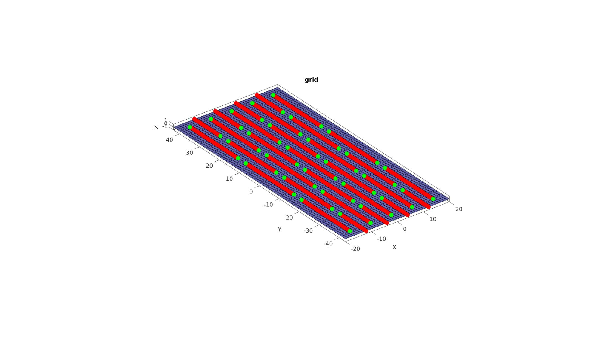
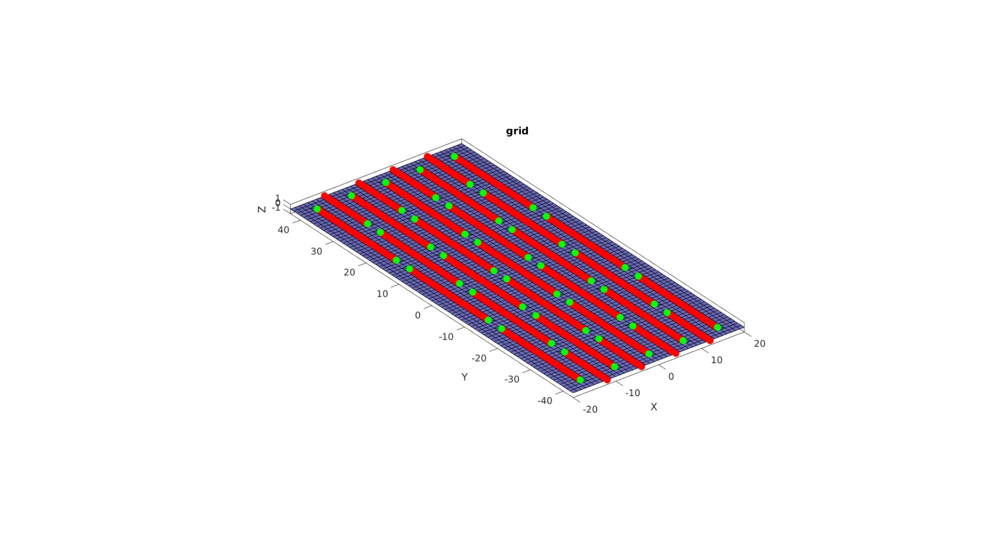
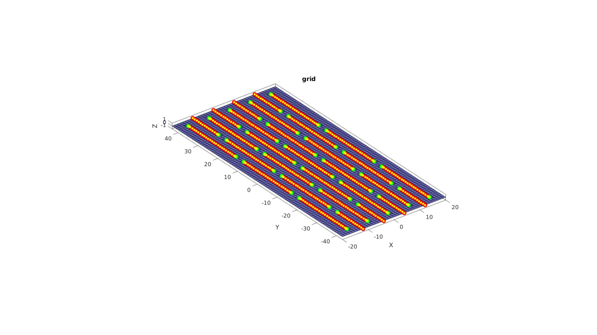
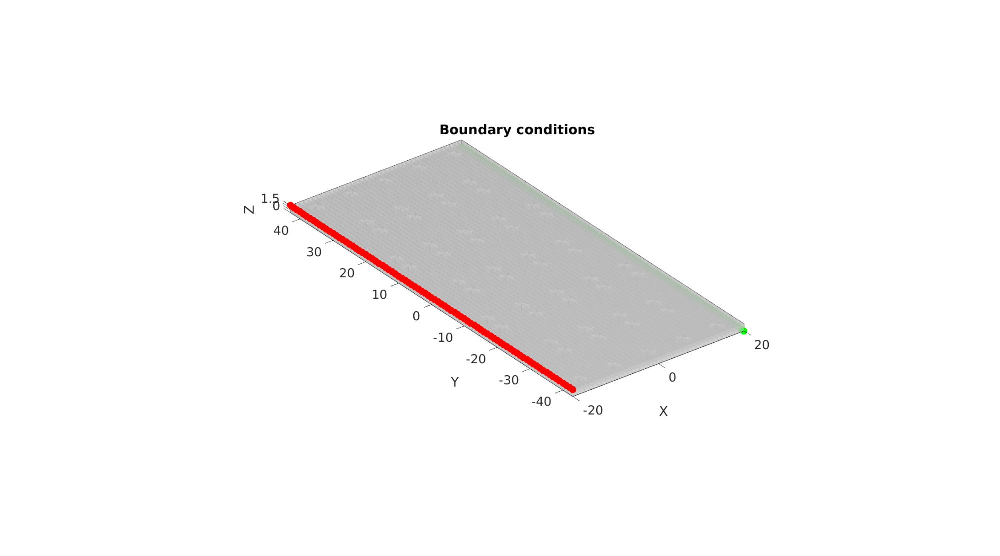
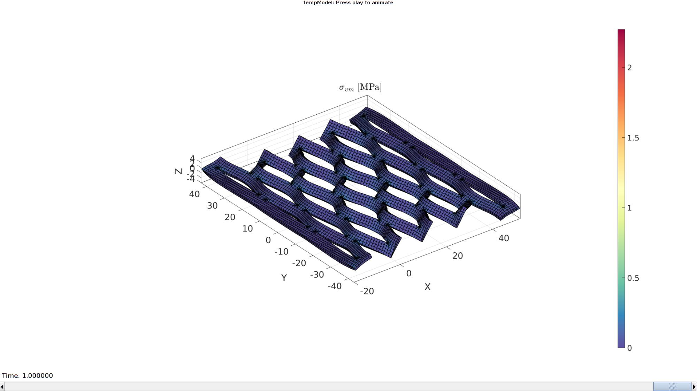

Contents
% DEMO_febio_0090_expanding_lattice_01 % Below is a demonstration for: % % * Building geometry for a thin sheet featuring a cut pattern % * Defining the sheet as solid or shell elements % * Defining the boundary conditions % * Coding the febio structure % * Running the model % * Importing and visualizing the results
Keywords
- febio_spec version 4.0
- febio, FEBio
- kresling
- displacement control, displacement boundary condition
- solid/shell elements, quad4/hex8
- static, solid
- hyperelastic, Neo-Hookean
clear; close all; clc;
Plot settings
fontSize=20; faceAlpha1=0.8; %transparency markerSize=40; %For plotted points markerSize2=10; %For nodes on patches lineWidth1=1; %For meshes lineWidth2=2; %For boundary edges cMap=spectral(250); %colormap
% Geometry parameters length_cut = 25; % Uneven and larger than 2 length_spacing = 3; num_repeat_x = 9; num_repeat_y = 3; num_nodes_x = 1+(length_spacing+1)*(num_repeat_x+1); num_nodes_y = num_repeat_y*length_cut + length_spacing*(num_repeat_y+1); plateEl = [num_nodes_x-1,num_nodes_y-1]; plateDim = plateEl; layerThickness = length_spacing/2; elementType = 'hex8';%'quad4'; numRefine = 6; appliedStretch = 1.8; displacementMagnitude = (plateDim(1)*(appliedStretch-1)); %Material parameter set E_youngs1=1; %Material Young's modulus nu1=0.4; %Material Poisson's ratio % FEA control settings numTimeSteps=15; %Number of time steps desired max_refs=50; %Max reforms max_ups=0; %Set to zero to use full-Newton iterations opt_iter=10; %Optimum number of iterations max_retries=5; %Maximum number of retires dtmin=(1/numTimeSteps)/100; %Minimum time step size dtmax=(1/numTimeSteps); %Maximum time step size runMode='external'; % Path names defaultFolder = fileparts(fileparts(mfilename('fullpath'))); savePath=fullfile(defaultFolder,'data','temp'); % Defining file names febioFebFileNamePart='tempModel'; febioFebFileName=fullfile(savePath,[febioFebFileNamePart,'.feb']); %FEB file name febioLogFileName=[febioFebFileNamePart,'.txt']; %FEBio log file name febioLogFileName_disp=[febioFebFileNamePart,'_disp_out.txt']; %Log file name for exporting displacement febioLogFileName_stress_prin=[febioFebFileNamePart,'_stress_prin_out.txt']; %Log file name for exporting principal stress febioLogFileName_force=[febioFebFileNamePart,'_force_out.txt']; %Log file name for exporting force
[F,V] = quadPlate(plateDim,plateEl);
ind = []; indSplit = []; s = ceil((length_cut+length_spacing)/2); i_split1 = []; i_split2 = []; p = length_spacing+2:length_cut-2+length_spacing+1; i1 = []; for i_s = 1:1:num_repeat_y+1 ii = p+ ((i_s-1)*(length_spacing+length_cut)); i_add = ii(ii<num_nodes_y); i1 = [i1 i_add]; if ~isempty(i_add) i_split_add = [i_add(1)-1 i_add(end)+1]; i_split1 = [i_split1 i_split_add(i_split_add>0 & i_split_add<num_nodes_y)]; end end p = length_spacing+2-s:length_cut-2+length_spacing+1-s; i2 = []; for i_s = 1:1:num_repeat_y+1 ii = p+ ((i_s-1)*(length_spacing+length_cut)); i_add = ii(ii<=num_nodes_y & ii>0); if ~isempty(i_add) i_split_add = [i_add(1)-1 i_add(end)+1]; i_split2 = [i_split2 i_split_add(i_split_add>0 & i_split_add<num_nodes_y)]; end i2 = [i2 i_add]; end c = 1; for j = (length_spacing+2):length_spacing+1:num_nodes_x-1 if iseven(c) indAdd = sub2ind([num_nodes_y,num_nodes_x],i2,j*ones(size(i2))); indSplitAdd = sub2ind([num_nodes_y,num_nodes_x],i_split2,j*ones(size(i_split2))); else indAdd = sub2ind([num_nodes_y,num_nodes_x],i1,j*ones(size(i1))); indSplitAdd = sub2ind([num_nodes_y,num_nodes_x],i_split1,j*ones(size(i_split1))); end ind = [ind; indAdd(:)]; indSplit = [indSplit; indSplitAdd(:)]; c = c+1; end
cFigure; hold on; title('grid'); hp=gpatch(F,V,'bw','k',0.9); plotV(V(ind,:),'r.','MarkerSize',markerSize) plotV(V(indSplit,:),'g.','MarkerSize',markerSize) axisGeom; camlight headlight; gdrawnow;
for q = 1:1:numRefine indFacesRemove = []; C = patchConnectivity(F,V,{'vf'}); for i_vs = 1:length(indSplit) i_v = indSplit(i_vs); V = [V; V(i_v,:)]; % Append copy of point indFacesNow = C.vertex.face(i_v,:); indFacesNow = indFacesNow(indFacesNow>0); indFacesRemove = [indFacesRemove indFacesNow]; for i_f = indFacesNow f = F(i_f,:); % Reorder so split point is first iStart = find(f == i_v); % Index of split point if iStart>1 f = [f(iStart:end) f(1:iStart-1)]; % reorder end e1 = [f(1),f(2)]; e2 = [f(2),f(3)]; e3 = [f(3),f(4)]; e4 = [f(4),f(1)]; if any(ismember(e1,ind)) ind=[ind; length(V)+1]; elseif any(ismember(e4,ind)) ind=[ind; length(V)+3]; end F_add = [f(1) length(V)+1 length(V)+2 length(V)+3;... length(V)+1 f(2) f(3) length(V)+2;... length(V)+3 length(V)+2 f(3) f(4)]; F = [F; F_add]; V = [V; mean(V(e1,:),1); mean(V(f,:),1); mean(V(e4,:),1)]; end end L = true(size(F,1),1); L(indFacesRemove) = 0; F = F(L,:); [F,V,~,indFix] = mergeVertices(F,V); ind = indFix(ind); indSplit = indFix(indSplit); [F,V,indFix] = patchCleanUnused(F,V); ind = indFix(ind); indSplit = indFix(indSplit); ind = unique(ind); end
Eb=patchBoundary(F,V); smoothOpt.Method = 'HC'; smoothOpt.n = 250; smoothOpt.RigidConstraints = unique(Eb(:)); V = patchSmooth(F,V,[],smoothOpt);
V(:,3)=V(:,3)+2*rand(size(V(:,3)));
cFigure; hold on; title('grid'); hp=gpatch(F,V,'bw','k',0.9); % patchNormPlot(F,V,[],'v'); plotV(V(ind,:),'r.','MarkerSize',markerSize) plotV(V(indSplit,:),'g.','MarkerSize',markerSize) % Eb = patchBoundary(F); % plotV(V(unique(Eb),:),'c.','MarkerSize',markerSize*2) axisGeom; camlight headlight; gdrawnow;
C = patchConnectivity(F,V,{'vf'});
VF = patchCentre(F,V);
indNew = [];
for i_v = ind(:)'
V = [V; V(i_v,:)]; % Append copy of point
indFacesNow = C.vertex.face(i_v,:);
indFacesNow = indFacesNow(indFacesNow>0);
for i_f = indFacesNow(:)'
if VF(i_f,1)>V(i_v,1) % On the right side
f = F(i_f,:);
f(f==i_v)=length(V);
F(i_f,:)=f;
indNew = [indNew; length(V)];
end
end
end
cFigure; hold on; title('grid'); hp=gpatch(F,V,'bw','k',0.9); % patchNormPlot(F,V,[],'v'); plotV(V(ind,:),'r.','MarkerSize',markerSize) plotV(V(indSplit,:),'g.','MarkerSize',markerSize) % Eb = patchBoundary(F); % plotV(V(unique(Eb),:),'c.','MarkerSize',markerSize*2) plotV(V(indNew,:),'y.','MarkerSize',markerSize/2) axisGeom; camlight headlight; gdrawnow;
Define element type and boundary conditions
searchtol=1e-3; switch elementType case 'quad4' E = F; bcFixList = find(V(:,1)<(min(V(:,1))+searchtol)); bcPrescribeList = find(V(:,1)>(max(V(:,1))-searchtol)); case 'hex8' [E,V] = patchThick(F,V,1,layerThickness,ceil(layerThickness)); F = element2patch(E); bcFixList = find(V(:,1)<(min(V(:,1))+searchtol) & V(:,3) > max(V(:,3))-searchtol); bcPrescribeList = find(V(:,1)>(max(V(:,1))-searchtol) & V(:,3) < min(V(:,3))+searchtol); % bcFixList = find(V(:,1)<(min(V(:,1))+searchtol)); % bcPrescribeList = find(V(:,1)>(max(V(:,1))-searchtol)); end
% V(:,3)=V(:,3)+1e-2*randn(size(V(:,3)));
Visualizing boundary conditions. Markers plotted on the semi-transparent model denote the nodes in the various boundary condition lists.
hf=cFigure; title('Boundary conditions','FontSize',fontSize); xlabel('X','FontSize',fontSize); ylabel('Y','FontSize',fontSize); zlabel('Z','FontSize',fontSize); hold on; gpatch(F,V,'w','none',0.5); hl(1)=plotV(V(bcFixList,:),'r.','MarkerSize',markerSize); hl(2)=plotV(V(bcPrescribeList,:),'g.','MarkerSize',markerSize); axisGeom(gca,fontSize); camlight headlight; drawnow;
Defining the FEBio input structure
See also febioStructTemplate and febioStruct2xml and the FEBio user manual.
%Get a template with default settings [febio_spec]=febioStructTemplate; %febio_spec version febio_spec.ATTR.version='4.0'; %Module section febio_spec.Module.ATTR.type='solid'; %Control section febio_spec.Control.analysis='STATIC'; febio_spec.Control.time_steps=numTimeSteps; febio_spec.Control.step_size=1/numTimeSteps; febio_spec.Control.solver.max_refs=max_refs; febio_spec.Control.solver.qn_method.max_ups=max_ups; febio_spec.Control.time_stepper.dtmin=dtmin; febio_spec.Control.time_stepper.dtmax=dtmax; febio_spec.Control.time_stepper.max_retries=max_retries; febio_spec.Control.time_stepper.opt_iter=opt_iter; %Material section materialName1='Material1'; febio_spec.Material.material{1}.ATTR.name=materialName1; febio_spec.Material.material{1}.ATTR.type='neo-Hookean'; febio_spec.Material.material{1}.ATTR.id=1; febio_spec.Material.material{1}.E=E_youngs1; febio_spec.Material.material{1}.v=nu1; % Mesh section % -> Nodes %%Area of interest febio_spec.Mesh.Nodes{1}.ATTR.name='Object1'; %The node set name febio_spec.Mesh.Nodes{1}.node.ATTR.id=(1:size(V,1))'; %The node id's febio_spec.Mesh.Nodes{1}.node.VAL=V; %The nodel coordinates % -> Elements partName1='Part1'; febio_spec.Mesh.Elements{1}.ATTR.name=partName1; %Name of this part febio_spec.Mesh.Elements{1}.ATTR.type=elementType; %Element type febio_spec.Mesh.Elements{1}.elem.ATTR.id=(1:1:size(E,1))'; %Element id's febio_spec.Mesh.Elements{1}.elem.VAL=E; %The element matrix % -> NodeSets nodeSetName1='bcPrescribeList1'; nodeSetName2='bcFixList2'; febio_spec.Mesh.NodeSet{1}.ATTR.name=nodeSetName1; febio_spec.Mesh.NodeSet{1}.VAL=mrow(bcPrescribeList); febio_spec.Mesh.NodeSet{2}.ATTR.name=nodeSetName2; febio_spec.Mesh.NodeSet{2}.VAL=mrow(bcFixList); %MeshDomains section switch elementType case 'quad4' febio_spec.MeshDomains.ShellDomain{1}.ATTR.name=partName1; febio_spec.MeshDomains.ShellDomain{1}.ATTR.mat=materialName1; febio_spec.MeshDomains.ShellDomain{1}.shell_thickness=layerThickness; case 'hex8' febio_spec.MeshDomains.SolidDomain{1}.ATTR.name=partName1; febio_spec.MeshDomains.SolidDomain{1}.ATTR.mat=materialName1; end % -> Prescribe boundary conditions febio_spec.Boundary.bc{1}.ATTR.name='prescibed_displacement_z'; febio_spec.Boundary.bc{1}.ATTR.type='prescribed displacement'; febio_spec.Boundary.bc{1}.ATTR.node_set=nodeSetName1; febio_spec.Boundary.bc{1}.dof='x'; febio_spec.Boundary.bc{1}.value.ATTR.lc=1; febio_spec.Boundary.bc{1}.value.VAL=displacementMagnitude; febio_spec.Boundary.bc{1}.relative=0; % febio_spec.Boundary.bc{2}.ATTR.name='prescibed_displacement_z'; % febio_spec.Boundary.bc{2}.ATTR.type='prescribed displacement'; % febio_spec.Boundary.bc{2}.ATTR.node_set=nodeSetName1; % febio_spec.Boundary.bc{2}.dof='z'; % febio_spec.Boundary.bc{2}.value.ATTR.lc=1; % febio_spec.Boundary.bc{2}.value.VAL=displacementMagnitude; % febio_spec.Boundary.bc{2}.relative=0; % -> Fix boundary conditions febio_spec.Boundary.bc{2}.ATTR.name='zero_displacement_xy'; febio_spec.Boundary.bc{2}.ATTR.type='zero displacement'; febio_spec.Boundary.bc{2}.ATTR.node_set=nodeSetName1; febio_spec.Boundary.bc{2}.x_dof=0; febio_spec.Boundary.bc{2}.y_dof=1; febio_spec.Boundary.bc{2}.z_dof=1; febio_spec.Boundary.bc{3}.ATTR.name='zero_displacement_xyz'; febio_spec.Boundary.bc{3}.ATTR.type='zero displacement'; febio_spec.Boundary.bc{3}.ATTR.node_set=nodeSetName2; febio_spec.Boundary.bc{3}.x_dof=1; febio_spec.Boundary.bc{3}.y_dof=1; febio_spec.Boundary.bc{3}.z_dof=1; %LoadData section % -> load_controller febio_spec.LoadData.load_controller{1}.ATTR.name='LC_1'; febio_spec.LoadData.load_controller{1}.ATTR.id=1; febio_spec.LoadData.load_controller{1}.ATTR.type='loadcurve'; febio_spec.LoadData.load_controller{1}.interpolate='LINEAR'; %febio_spec.LoadData.load_controller{1}.extend='CONSTANT'; febio_spec.LoadData.load_controller{1}.points.pt.VAL=[0 0; 1 1]; %Output section % -> log file febio_spec.Output.logfile.ATTR.file=febioLogFileName; febio_spec.Output.logfile.node_data{1}.ATTR.file=febioLogFileName_disp; febio_spec.Output.logfile.node_data{1}.ATTR.data='ux;uy;uz'; febio_spec.Output.logfile.node_data{1}.ATTR.delim=','; % febio_spec.Output.logfile.node_data{2}.ATTR.file=febioLogFileName_force; % febio_spec.Output.logfile.node_data{2}.ATTR.data='Rx;Ry;Rz'; % febio_spec.Output.logfile.node_data{2}.ATTR.delim=','; febio_spec.Output.logfile.element_data{1}.ATTR.file=febioLogFileName_stress_prin; febio_spec.Output.logfile.element_data{1}.ATTR.data='s1;s2;s3'; febio_spec.Output.logfile.element_data{1}.ATTR.delim=','; % Plotfile section febio_spec.Output.plotfile.compression=0;
Quick viewing of the FEBio input file structure
The febView function can be used to view the xml structure in a MATLAB figure window.
%%|febView(febio_spec); %Viewing the febio file|
Exporting the FEBio input file
Exporting the febio_spec structure to an FEBio input file is done using the febioStruct2xml function.
febioStruct2xml(febio_spec,febioFebFileName); %Exporting to file and domNode %system(['gedit ',febioFebFileName,' &']);
Running the FEBio analysis
To run the analysis defined by the created FEBio input file the runMonitorFEBio function is used. The input for this function is a structure defining job settings e.g. the FEBio input file name. The optional output runFlag informs the user if the analysis was run succesfully.
febioAnalysis.run_filename=febioFebFileName; %The input file name febioAnalysis.run_logname=febioLogFileName; %The name for the log file febioAnalysis.disp_on=1; %Display information on the command window febioAnalysis.runMode=runMode; febioAnalysis.maxLogCheckTime=10; %Max log file checking time [runFlag]=runMonitorFEBio(febioAnalysis);%START FEBio NOW!!!!!!!!
%%%%%%%%%%%%%%%%%%%%%%%%%%%%%%%%%%%%%%%%%%%%%%%%%%%%%%%%%%%%%%%%%%%%%%%%%%%
--------> RUNNING/MONITORING FEBIO JOB <-------- 03-Sep-2024 09:36:15
FEBio path: /home/kevin/FEBioStudio/bin/febio4
# Attempt removal of existing log files 03-Sep-2024 09:36:15
* Removal succesful 03-Sep-2024 09:36:15
# Attempt removal of existing .xplt files 03-Sep-2024 09:36:15
* Removal succesful 03-Sep-2024 09:36:15
# Starting FEBio... 03-Sep-2024 09:36:15
Max. total analysis time is: Inf s
* Waiting for log file creation 03-Sep-2024 09:36:15
Max. wait time: 10 s
* Log file found. 03-Sep-2024 09:36:15
# Parsing log file... 03-Sep-2024 09:36:15
number of iterations : 7 03-Sep-2024 09:36:18
number of reformations : 7 03-Sep-2024 09:36:18
------- converged at time : 0.0666667 03-Sep-2024 09:36:18
number of iterations : 4 03-Sep-2024 09:36:20
number of reformations : 4 03-Sep-2024 09:36:20
------- converged at time : 0.133333 03-Sep-2024 09:36:20
number of iterations : 4 03-Sep-2024 09:36:22
number of reformations : 4 03-Sep-2024 09:36:22
------- converged at time : 0.2 03-Sep-2024 09:36:22
number of iterations : 6 03-Sep-2024 09:36:22
number of reformations : 6 03-Sep-2024 09:36:22
------- converged at time : 0.266667 03-Sep-2024 09:36:22
number of iterations : 12 03-Sep-2024 09:36:29
number of reformations : 12 03-Sep-2024 09:36:29
------- converged at time : 0.322222 03-Sep-2024 09:36:29
number of iterations : 9 03-Sep-2024 09:36:31
number of reformations : 9 03-Sep-2024 09:36:31
------- converged at time : 0.372995 03-Sep-2024 09:36:31
number of iterations : 5 03-Sep-2024 09:36:33
number of reformations : 5 03-Sep-2024 09:36:33
------- converged at time : 0.424628 03-Sep-2024 09:36:33
number of iterations : 5 03-Sep-2024 09:36:33
number of reformations : 5 03-Sep-2024 09:36:33
------- converged at time : 0.479268 03-Sep-2024 09:36:33
number of iterations : 4 03-Sep-2024 09:36:35
number of reformations : 4 03-Sep-2024 09:36:35
------- converged at time : 0.536313 03-Sep-2024 09:36:35
number of iterations : 4 03-Sep-2024 09:36:37
number of reformations : 4 03-Sep-2024 09:36:37
------- converged at time : 0.595282 03-Sep-2024 09:36:37
number of iterations : 4 03-Sep-2024 09:36:37
number of reformations : 4 03-Sep-2024 09:36:37
------- converged at time : 0.655791 03-Sep-2024 09:36:37
number of iterations : 4 03-Sep-2024 09:36:39
number of reformations : 4 03-Sep-2024 09:36:39
------- converged at time : 0.717531 03-Sep-2024 09:36:39
number of iterations : 4 03-Sep-2024 09:36:41
number of reformations : 4 03-Sep-2024 09:36:41
------- converged at time : 0.780257 03-Sep-2024 09:36:41
number of iterations : 4 03-Sep-2024 09:36:41
number of reformations : 4 03-Sep-2024 09:36:41
------- converged at time : 0.843771 03-Sep-2024 09:36:41
number of iterations : 4 03-Sep-2024 09:36:43
number of reformations : 4 03-Sep-2024 09:36:43
------- converged at time : 0.907915 03-Sep-2024 09:36:43
number of iterations : 4 03-Sep-2024 09:36:44
number of reformations : 4 03-Sep-2024 09:36:44
------- converged at time : 0.972564 03-Sep-2024 09:36:44
number of iterations : 3 03-Sep-2024 09:36:44
number of reformations : 3 03-Sep-2024 09:36:44
------- converged at time : 1 03-Sep-2024 09:36:44
Elapsed time : 0:00:29 03-Sep-2024 09:36:44
N O R M A L T E R M I N A T I O N
# Done 03-Sep-2024 09:36:44
%%%%%%%%%%%%%%%%%%%%%%%%%%%%%%%%%%%%%%%%%%%%%%%%%%%%%%%%%%%%%%%%%%%%%%%%%%%
Import FEBio results
if runFlag==1 %i.e. a succesful run
% Importing nodal displacements from a log file dataStruct=importFEBio_logfile(fullfile(savePath,febioLogFileName_disp),0,1); %Access data N_disp_mat=dataStruct.data; %Displacement timeVec=dataStruct.time; %Time %Create deformed coordinate set V_DEF=N_disp_mat+repmat(V,[1 1 size(N_disp_mat,3)]);
Importing element stress from a log file
dataStruct=importFEBio_logfile(fullfile(savePath,febioLogFileName_stress_prin),0,1);
%Access data
E_stress_mat=dataStruct.data;
E_stress_mat_VM=sqrt(( (E_stress_mat(:,1,:)-E_stress_mat(:,2,:)).^2 + ...
(E_stress_mat(:,2,:)-E_stress_mat(:,3,:)).^2 + ...
(E_stress_mat(:,1,:)-E_stress_mat(:,3,:)).^2 )/2); %Von Mises stress
Plotting the simulated results using anim8 to visualize and animate deformations
[CV]=faceToVertexMeasure(E,V,E_stress_mat_VM(:,:,end));
% Create basic view and store graphics handle to initiate animation
hf=cFigure; %Open figure /usr/local/MATLAB/R2020a/bin/glnxa64/jcef_helper: symbol lookup error: /lib/x86_64-linux-gnu/libpango-1.0.so.0: undefined symbol: g_ptr_array_copy
gtitle([febioFebFileNamePart,': Press play to animate']);
title('$\sigma_{vm}$ [MPa]','Interpreter','Latex')
hp1=gpatch(F,V_DEF(:,:,end),CV,'k',1,lineWidth1); %Add graphics object to animate
hp1.FaceColor='interp';
axisGeom(gca,fontSize);
colormap(cMap); colorbar;
caxis([min(E_stress_mat_VM(:)) max(E_stress_mat_VM(:))/2]);
axis(axisLim(V_DEF)); %Set axis limits statically
camlight headlight;
% Set up animation features
animStruct.Time=timeVec; %The time vector
for qt=1:1:size(N_disp_mat,3) %Loop over time increments
[CV]=faceToVertexMeasure(E,V,E_stress_mat_VM(:,:,qt));
%Set entries in animation structure
animStruct.Handles{qt}=[hp1 hp1]; %Handles of objects to animate
animStruct.Props{qt}={'Vertices','CData'}; %Properties of objects to animate
animStruct.Set{qt}={V_DEF(:,:,qt),CV}; %Property values for to set in order to animate
end
anim8(hf,animStruct); %Initiate animation feature
gdrawnow;

end